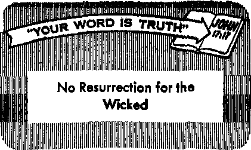

Harvesting the Oceans
PAGE8
Ceylon, the Resplendent Isle
E 1 €>• .
Children Have Legal Rights?
AUGUST 8. 1960
THE MISSION OF THIS JOURNAL
Newt source! that are able to keep you awake to the vital Issues of our times must be unfettered by censorship and selfish interests. "AwakeJ" has no fetters. It recognizes facts, faces facts, Is free to publish facts. It Is not bound by political ambitions or obligations; It is unhampered by advertisers whose toes must not be trodden on; it is unprejudiced by traditional creeds. This journal keeps itself free that it may speak freely to you. But it does not abuse its freedom. It maintains integrity to truth.
"Awake!" uses the regular news channels, but Is not dependent on them. Its own correspondents are on all continents, in scores Of nations. From the four corners of the eorth their uncensored, on-the-scenes reports come to you through these columns. This journal’s viewpoint Is not narrow, but is international. It is read in many nations, in many languages, by persons of all ages. Through its pages many fields of knowledge pass in review—government, commerce, religion, history, geography, science, social conditions, nature! wonders—why, its coverage is as brood os the earth and as high as the heavens.
"Awake!" pledges itself to righteous principles, to exposing hidden foes and subtle dangers, to championing freedom for all, to comforting mourners and strengthening those disheartened by the failures of a delinquent world, reflecting sure hope for the establishment of a righteous New World.
Get acquainted with "Awake!" Keep awake by reading "Awake!"
Published Simultaneously in the United States by the WATCHTOWER BIBLE AND TRACT SOCIETY OF NEW YORK, INC. 117 Adams Street Brooklyn 1. New York, U.S.A.
and in England by
WATCH TOWER BIBLE Watch Tower House, The Ridgeway N. H. Knorr, President
Printing this issue; 3,075,000
““Awake!” is published In the in the following 21 languages. Semimonthly—Afrikaans, Dutch and Japanese. Danish, Dutch, Ent-Ueh, Finnish, French, German, Greek, Italian, Japanese, Norwegian, Portuguese, Spanish, Swedish, Tagalog. Zulu. Monthly—Indonesian, Korean, Polish, Ukrainian.
Yearly anhserlptlnn rata
Buffalo for semimonthly editions
Canada. ISO Brldgeland Ara., Toronto 19, Ont
England, Watch Tower House,
New Zealand, 621 New North Road, Auckland, N.Z. 1 7/-South Africa, Prtrate Bag, Eldoradopark, Transvaal. ?/-
Monthly editions cost hall the share rata.
AND TRACT SOCIETY
London N.W. 7. England Grant Suiter, Secretary
4d a copy (Australis, Sd)
St n Ittanret far subscriptions should he eent to the tdBra in your country. Otherwise send your remittance to London, Notice of expiration la sent at luat two tauei before subsaiptlan expires.
CHANGES dF ADDRESS rttuld reach is thirty dayi before your date Give u your old and now adHn (If jQMlbli, year old address libel), Watch Tower, Watch Tower Ham, The Ridgeway, London N.W. 7 England.
Entered as ewcnd-clMs tunler at Brooklyn, N.Y. Printed in Vneiand
The Bible fra relation astd la “Awata 1” It the New Warld Tnaslatloa of the Holy Scriptures When other translations are used the following symbols wIN appear behind the citations;
AS - American Standard Version AT- An American Translation jlV— Authorized Version (1611) Darby - J. N. Darby's Translation
Douay — Catholic Douay version
The Emphatic. DUglott JP - Javiih Publication Boe. Le - lapac Leaser's verricn
Mo - James Moffatt’s Translation Rotherham - J. B. Rotherham's Version RS - Bestead Standard Version Young - Robert Young’s Version
CONTENTS
Are You Intelligent but Unintelligible? 3
Can the Dead Help in Time of Need? 5
Nagging Wives and Heart Disease
German Protestants on the
Ministers Treated Worst of All
Do Children Have Legal Rights?
What Has Happened to the Caribou? 24 “Jehovah’s Witnesses Mold
“Your Word Is Truth”
No Resurrection for the Wicked
Watching the World
IF YOU are a well-educated person, do you make yourself understood by those with less education? If you do not, what benefit can they get from your knowledge? What contribution can you make toward improving public knowledge for the betterment of civilization? How can others benefit from what you know if your speech or writing is so obscure and complex that few can understand you?
It is a foolish mistake to think that great intelligence is shown by speaking in complex, technical language that is far above the heads of your listeners. You may impress them with what you say or write, but for the good it does you might just as well have kept silent. As far as they were concerned you were unintelligible. If you are one who strives to make simple things complex and complex things practically incomprehensible, you show a lack of good sense.
Because many intelligent people have the mistaken view that they must use long words and complex speech to gain public prestige, they have created an intellectual gulf between themselves and the common people. They hide their knowledge in a gobbledygook that few can understand. Regarding this the magazine The Scientific Monthly said: “There is a case for, as well
as one against, scientific gobbledygook. This term, coined by Maury Maverick was defined by him as ‘talk or writing which is long, pompous, vague, involved, usually with Latinized words.’ The case for the use of gobbledygook by an ambitious scientist is simple and sound. It is one of the surest ways to get oneself taken seriously; that is, to impress people with one’s
importance and wisdom. . . , This conviction that thoughts expressed in big words must be profound and that the man who uses big words must be learned is deeply ingrained in our culture.”
Although it may be deeply ingrained in modem cultqre, it is a poor standard for judging intelligence. Wisdom is not shown by complexity but by simplicity. It takes a man that thoroughly understands his subject to explain it in terms simple enough for a layman to understand. His plain speech may not give him prestige -by" impressing people, but it makes his ideas understandable. Those who hear him or read his writings learn something, and that is far more important than being impressive but unintelligible. He has contributed to the educational improvement' of others.
Plain speech is a better standard for judging a man’s intellect than complex speech, because a person can hide his ignorance more easily with complex language. He may be too proud to admit that he was wrong, that he made a mistake or that he plainly did not know, and by his obscure, complex and technical language he pretends to be better informed than he actually is. It is easier for him to deceive the uninformed with complexity than if he were to use plain terms that everyone can qnderstand.
By persisting in the use of complex language with long words you can get in such a mental rut that you may not be able to express yourself clearly and simply when you actually try. You become intellectually isolated from persons of less learning by a gulf of your own making. Note this interesting remark by the Atlantic magazine: “The impression that philosophical and scientific ideas cannot be explained in plain language to plain people is also due to the fact that philosophers and men of science have not, as a rule, the wit to do it It is due in plain terms to the stupidity of the learned men and not to the stupidity of humanity.” It is also interesting to note what the biologist Hans Zinsser remarked about this; “Real philosophers, however, are also very often repetitious, and get away with it because so n^ny of them can say old things in such an incomprehensible manner that, by the time one has reread a sentence five or six times, one takes so much pleasure in thinking that one has comprehended the thought that one forgets how old it is."
If you appreciate the true value of knowledge, you will speak and write so you can be understood by common people, that they may be instructed and benefited. You will strive to reach your audience intellectually by speaking the kind of language they can understand without effort. The degree of your success can be determined by how much they retain.
Real skill, a keen mind and a thorough knowledge of a subject are required to speak understandably to an audience on a different intellectual level. One who was exceptionally skilled in this is Jesus Christ. He was able to express himself in terms that were simple but striking in thought content. Profound truths were spoken by him in such understandable language that people of all kinds profited from what he said. They went away with much more knowledge than when they had come. His sermon on the mount in the fifth chapter of Matthew well illustrates his simplicity of speech. Officers who came to arrest him were .so impressed that they went away empty-handed and told their superiors: “Never has another man spoken like this.” —John 7:46.
If you have anything that is intellectually beneficial to others, follow Jesus’ example by speaking in terms that make you understood without undue effort by your listeners. Think of your listeners and not of yourself. How impressive you sound to them is not as important as how much they learn from what you say. This was pointed out by Walter Campbell in his book Writing Non-Fiction. Speaking to professional men, he said: “We cannot permit our men of knowledge to remain silent, or to write and speak in an esoteric language, not understandable by intelligent people. It is the plain duty of experts, scholars and scientists to make themselves understood.” The same can be said for anyone who has worthwhile knowledge that can benefit other people.
Do not succumb to the foolish practice of thinking that long words and complex speech are the mark of great learning and great intelligence. Instead, of thinking about making a show of knowledge, think of the proverb: “The tongue of wise ones does good with knowledge.”—Prov. 15:2.
ample the Bible's account of Saul, the first king of Israel, consulting and talking to the dead prophet Samuel will be pointed out.
WHAT IS THE BIBLE ANSWER?
INEVITABLY a time of need faces everyone sometime in life, and then even the strong and independent feel insecure and look for help. Threatened by atomic power or by the destructive forces of nature, mankind looks to superhuman sources to cope with the situation. When seized by the enemies heart disease or cancer and when confronted with the loss of a loved one in death, all men are made to feel weak and in need of help. But where can one look to be assured of help? Can the dead help in time of need?
It may sound strange to some that people would look to the dead for help in time of need, but millions do. In the Indonesian village of Kalingooa rain had not fallen for many weeks. So the natives, known as the Torajas, visited the grave of a famous chief. They began to pour water upon it and to pray: “O grandfather, have pity on us; if it is your will that this year we should eat, then give rain.” Looking to the dead for help in time of need is not confined to non-Christian countries and peoples. In times of need the devout often make appeal to saints, their religious ancestors as it were, even to the extent, in some places, of putting out food and drink for their benefit.
To look to the dead in behalf of the living is proper, it is backed up by the Bible, so many will argue. According to V. D. Rishi, “The Bible is full of references regarding survival after death and communion between the dead and the living.” As an ex
‘What better proof could there be that the dead can be looked to in time of need?’ those believing in the power of the dead will ask.
Saul’s Visit to the Witch
Saul was a powerful man: “There was no man of the sons of Israel that was handsomer than he; from his shoulders upward he was taller than all the people.” Although he was meek and humble when chosen as king, Saul later became rebellious and lost God’s favor. On one occasion he fell into a dire time of need when confronted by a superior force of Philistines. Appeals to Jehovah produced no answer. The faithful prophet Samuel had died, so Saul could not consult God through him; besides, before Samuel died he had refused to speak with unfaithful Saul. —lSam.9:2; 15:35.
Terrified by the enemy forces, Saul said to his servants: “ ‘Look for a woman who is a mistress of spirit mediumship for me and let me go-to her and consult her.’ Then his servants said to him: ‘Look! there is a woman who is a mistress of spirit mediumship in En-dor.’ ” So in direct opposition to God’s command, “Do not turn yourselves to the spirit mediums, and do not consult professional foretellers of events,” Saul headed for En-dor to see the spirit medium there.—1 Sam. 28:3-7; Lev. 19: 31; 20:27.
Since Saul, earlier in his reign, had obeyed God’s law and rid the land of spirit mediums, "Saul disguised himself . , , and went, he and two men with him, and they came to the woman by night.” At Saul’s request, ‘'Bring up Samuel for me,” the woman employed her spiritualistic powers and, according to her words, “a god I saw coming up out of the earth.” At Saul’s eager inquiry, "What is his form?” she described to Saul: "It is an old man coming up, and he has himself covered with a sleeveless coat.” From the description given by the woman, Saul recognized a resemblance to Samuel when he was alive. According to the Bible record, Saul saw no form but only deduced what he wanted to believe —that this was Samuel.—1 Sam. 28:8rl4.
But, someone may object that the Bible says it was Samuel that then spoke to Saul. True, what Saul believed to be Samuel spoke: "And ‘Samuel’ began to say to Saul: ‘Why have you disturbed me by having me brought up?’ To this Saul said: ‘I am in very sore straits, as the Philistines are fighting against me and God himself has departed from me and has answered me no more, either by means of the prophets or by dreams, so that I am calling you to let me know what I shall do.’ ” There is no questioning the fact that through the spirit medium Saul had made contact with superhuman forces in this his time of need. But were they able to comfort him and give him help? Listen: "And ‘Samuel’ went on to say: ‘Why, then, do you inquire of me, when Jehovah himself has departed from you . . . Jehovah will rip the kingdom away from your hand and give it to your fellow man David... . And Jehovah will also give Israel with you into the hand of the Philistines, and tomorrow you and your sons will be with me.’ ” As if struck by a heavy blow, Saul fell to the ground too weak to move. No help or comfort was gained by Saul from this audience. —ISam. 28:15-20.
However, it may still be contended that* this was Samuel brought up from the dead, this proving that the dead are-alive somewhere and can have communication with the living. But is this true? Is it what the Bible teaches? Does the inspired record really show that this was Samuel? Could it have been someone else’s voice imitating Samuel’s?
Not Samuel
Samuel had been a faithful servant of Jehovah God right down to the day of his death. While alive he had nothing to do with spirit mediums, but, being a follower of God’s law, he saw to it that they were put to death. If Samuel while alive opposed spirit mediums as instruments of Satan the Devil, would he after he died allow one of them to arrange for him to meet with Saul? If Samuel refused to speak with Saul while alive, could a condemned witch make him do so after he had died? Further it might be asked: If Almighty God refused to speak with Saul while alive, could a spirit medium force Almighty God to give such a message through dead Samuel? Is a witch stronger them Almighty God? The obvious answer to these questions indicates that some superhuman power was practicing a deception.
This could not have really been Samuel because Samuel was dead, and, according to the Bible, “the dead . . . are conscious of nothing at all.” At death man “goes back to his ground, in that day his thoughts do perish.” Oh, someone will object, that refers to the body, but man has a soul that lives on eternally and that is why the living can talk to the dead. It is with the departed souls that the living communicate. Yet the Bible teaches, “Man came to be a living soul.” He was made a soul, not given one. That is why the scripture says, "The soul that sinneth, it shall die.” Contrary to the misconception of many, the Bible in not one place says the soul lives eternally; but the Hebrew word nephesh translated into English as soul is used scores of times to show it is destructible, subject to death. Its equivalent, the Greek word psyche, is used 16 times 'in the Christian Greek Scriptures in proving the same thing.—Ecd. 9:5, 10; Ps. 146:4; Gen. 2:7; Ezek. 18:4, AS.
Who Was It?
Well, then, if it was not Samuel’s voice that Saul heard, whose was it? Who had imitated Samuel, thus practicing a deception? Since this impostor was pretending to be the invisible, living soul of dead Samuel, he was a lying spirit. He was one of the demons, who are responsible for what the Bible calls “lying signs and wonders.” Of the chief of these lying demons the scripture says: “Satan himself keeps transforming himself into an angel of light.” The one who spoke to Saul was a lying spirit because his prediction was made from a counterfeit or fraudulent background by pretending to be the dead Samuel. He was enacting a lie, the same lie that has deceived millions of people right down to this day, namely, that the dead are not dead and that that is why it is possible for the living to talk with them.—2 Thess. 2:9; 2 Cor. 11:14.
It was Satan who used the serpent as a mouthpiece to deliver a lying message of deception to Eve, thereby gaining the title “original .serpent.” It was one of Satan’s spirit agents that deceived Saul into believing he was Samuel. Being superhuman, the demon would know how Samuel dressed and talked while alive, so he could easily imitate these. He also knew that Jehovah was against Saul for his wickedness and that without Jehovah’s help defeat at the hands of the superior forces of the Philistines was inevitable. But the wicked spirit could do nothing to protect Saul even though Saul had rejected Jehovah and had turned to demonism in his time of need. —Rev. 12:9.
Where to Turn in Time of Need
Faithful King Asa on one occasion was faced by an overwhelming force of a million Ethiopians. Did he rely on his own strength? Did he copy Saul and turn to de-monlsm for help? No, but he turned to the Almighty God Jehovah in sincere heartfelt prayer: “O Jehovah, as to helping it does not matter with you whether there are many or there is no power. Help us, O Jehovah our God, for upon you we do lean and in your name we have come against this multitude, O Jehovah, you are our God.” What was the result? “At that Jehovah defeated the Ethiopians before Asa and before Judah.” Yes, “Jehovah knows how to deliver people of godly devotion out of trial.”—2 Chron. 14:11, 12; 2 Pet. 2:9.
Today as never before mankind is in need of protection and help. The day has come for Satan and his wicked spirits, along with this entire wicked system of things, to be destroyed. Jesus said it would be a day of “tribulation such as has not occurred since the world’s beginning until now, no, nor will occur again.” Right now is the time to recognize the need of Jehovah’s help and protection; when face to face with death and destruction it will be too late. Saul rebelled against Jehovah; so in his time of need Jehovah did not listen to his pleas for help; but to faithful King Asa 'Jehovah was a strong tower of protection.’ Therefore, “search for Jehovah, you people, while he may be found. Call to him while he proves to be near,” and he will help you in your time of need. —Matt. 24:21; Prov. 18:10; Isa. 55:6.
779^
the unsolved problems of the sea are at
people-
FOR generations man has gazed at the sea. Never has he looked as industriously and soberly as now. The oceans have become a new frontier from which underwater ships could unleash sudden death upon whole segments of the population. But the sea also promises relief from the growing problem of too many and too little food. Man probes the depths with scientific precision in search of freshwater supplies and mineral treasure that stagger the imagination. The wind and surf literally throw the challenge in his face—ninety billion acres of sea, ripe for harvest!
Oceanographers concede they know less about many areas of the ocean than they do about the moon. To them least as urgent as those of space. From the practical standpoint much more is to be gained by probing the surging sea than Scarring the surface of the moon.
If science has its way, the ocean will one day play a fabulous role in man’s prosperity. As Captain J. Y. Cousteau expressed it, “Man has to enter the sea. He has no choice. Human population is increasing so rapidly and land resources are being depleted at such a rate, that flesh and vegetables of the sea are vital!” Soil erosion is another factor. It has swept minerals and salts into the sea, where they enrich tiny plants become fish food. This process results in an ocean chest worth $93 million per cubic mile of sea water.
Food and
Fertilizers
Sea water is believed to harbor a far greater foodsupporting potential than previously supposed.
One American scientist predicts that within a hundred years or so the oceans can become serious competitors of the continents in terms of material , re
sources. It is felt that man must now learn all he can about the habits of fish and the plant and animal life on which they feed, with the aim of increasing the supply of fish and their food. Science anticipates the day when the ocean’s fish crop will be scientifically farmed and harvested, overcoming the present hit-and-miss methods of the fishing industry. The big hurdle to successful farming of the ocean is inaccessibility and how to transfer the food of the sea to your table at reasonable prices. Under present techniques one acre of ocean yields just one pound of fish. It Is hoped that by employing such devices as television, electric fields, echo-sounding, hybridization and transplanting of strains from one part of the deep to another the catch will one day be doubled. If efforts are successful, it may not be long before your nearest supermarket will stock vegetables from the ocean floor, bread from dried herring, soup from algae and packages of seaweed candy for the youngsters.
Long ago some people discovered that seaweed was the logical answer to the problem of putting nitrates, potash, phosphates and manganese back into the eroded land. Housewives in Japan and China prize some seaweeds as their main vegetable. Culinary artists on the South Sea Islands agree. So do the Eskimos of Greenland. While metropolitan residents buy their vitamins at the local pharmacy, seaweed eaters relish them in the form of seaweed rich in vitamins A, B and C as well as iodine. Orientals consume the seaweed gelatin called agar with gusto. This same vegetable of the sea already turns up in your household in detergents, hand and hair lotions, shaving creams, aspirins, ice cream and chocolate milk, among other things. Giant kelps yield acetone and calcium acetate, both vital to production of gunpowder, The German Kaiser extracted potash from these ocean kelps when the fortunes of World War I depleted his resources. Seaweed can even be spun into a satisfactory cloth.
Surprisingly, the pearl-farming industry is more than a beautifier of the feminine throat. Many residents of India, China and Japan consume pearl powder as a cure for fever, eye trouble and liver disorders. Children are fed powdered pearls to supplement the intake of calcium for bones and teeth. By-products of pearl farming are sold the world over for pharmaceutical purposes. One newspaper reports a rumor that glamorous Cleopatra may have mixed pearl powder in wine to retain her beauty.
In more recent times, the hard-working Dutch and Norwegians have been prospecting the sea for cheap methods of extracting potassium from the ever-present sea. Dutch scientists find the lowly cockleshell a valuable source of soda ash. Hundreds of thousands of cubic yards of these limestone-rich shells are dredged yearly for road-building purposes. American" oil companies have developed floating rigs that can sink their drills into the ocean floors at tremendous depths where the coveted “black gold” awaits them.
According to Life magazine, scientists may learn how to control fusion reaction in the next ten years and generate limitless low-cost energy from the heavy hydrogen in the sea. “This could make possible 'weather control’ of whole cities. It could 'stir* the oceans to make them more productive of food or pump the Mississippi to irrigate west Texas. Furthermore it could turn sea waves into still another wonder; by desalinizing it, irrigation might transform great deserts like the Sahara, Mojave and Gobi into green gardens of fertility and abundant life. ... A breakthrough in photosynthesis, also, would enable man ultimately to produce an almost limitless food supply through the sun’s energy without the 'middle man’ of green plants. It is theoretically possible to make food from coal and petroleum. And the ocean’s food potential is much greater than land’s.”
Precious Water and Metals
Not long ago President Eisenhower warned that fresh water is rapidly getting to be America’s most critical natural resource. Naturally the sea is eyed as a possible remedy. For every person living on earth there are 600 million tons of sea water. In many parts of the world the dream of converting brackish sea water to fresh drinking water has come true. Salt-water conversion plants operating on a large scale have been set up in various places, such as Aruba in the Netherlands Antilles, off the Venezuelan coast. 'Riera one of the world’s largest salt-water conversion plants turns out 2,700,000 gallons of fresh water dally. The salt waters of the Persian Gulf are undergoing similar conversion, as are the sea waters at Abidjan on the Ivory Coast of West Africa. Eight years ago Uncle Sam organized the Office of Saline Water to push research in the field of saltwater conversion, and various techniques are being perfected. Approaches to the problem include electrical, chemical, thermal and mechanical means of extracting fresh water. At least half a million people already thrive on about twelve million gallons of converted sea water produced each day. If ways can be found to reduce the cost of conversion, the solution to the fresh water shortage should be realized. Of course, none of the man-made conversion plants are comparable to the Creator’s gigantic distillation system found in nature. About a third of the sunlight hitting the sea’s surface is utilized in converting sea water to fresh water by simple evaporation. If man can improve the efficiency of his own solar conversion methods or harness the atom to his desalinizing plants, cheap supplies of fresh water should result
Ocean explorers recently discovered other ocean treasure. Large areas of the ocean bottom are prolific with metalbearing rocks composed mainly of iron and manganese oxides, as well as substantial amounts of nickel, copper and cobalt. One oceanographer estimates that there are hundreds of thousands of dollars worth of these nodules in one ten-million-square-mlle section of the vast Pacific. Some appraise the mineral riches of the southern Pacific at $1.5 million per square mile. The mineral tonnage is calculated to be 198 billion. A ton of such metal on today’s market would he worth about $43. Industry is very much interested in this possible source of vital metals, though the source hides beneath 15,000 feet of sea.
Danger of Pollution
Like any farm, the oceans require proper care. There is fear of ocean contamination by man, who has the peculiar habit of destroying the very land and sea upon which his life depends. Many nations have complained that oil discharged from oceangoing tankers is causing widespread destruction of bird life. Beaches are undergoing transformation for the worse for the same reason. Clean-up efforts have not been very successful.
The oil threat to the ocean farm Is riitnor compared to the dangers of contamination from disposal of radioactive wastes. The pros and cons of this question are still echoing around the scientific world. American scientists take the position that it is safe to dump atomic wastes in the sea. Russian oceanographers disagree. Right or wrong, the old idea of stagnant basins in the deep is losing ground. Increased understanding of the mystery of ocean currents seems to indicate that all the sea is in constant motion. If this be so, obviously no nation could dump its radioactive wastes in some fancied ocean storeroom in the hope it would stay there for centuries until impotent.
America’s Atomic Energy Commission acknowledges: “Before the sea is used for mass disposal of atomic wastes, much more knowledge is needed concerning the accumulation of radioisotopes by marine fauna and flora, and their transfer along the food chain to those higher species used as food by man.” The Commission recommends more research in the ocean sciences, with special emphasis on coastal waters where "hot” atomic waste might be dumped. The threat to men's dream of fanning the Bea is not insignificant
Miiitary Exploration
Many a farmer’s fields have become battlegrounds. No less a possibility exists for the farmers of the sea. Naval experts are descending into the depths with the latest diving equipment, but with far different aims. The military views the sea as a maneuvering ground for a nation’s striking forces. The trend in submarines is “the deeper, the better,” Sub-detecting sonar can pick up the engine noises at depths of 800 feet. In time submariners hope to perfect a metal fish that will dive to 12,000 feet. This would protect the underwater ships from depth charges, which sink too slowly to hit them. Deep-water pressure also reduces the force of the explosion. While subs are being designed to go deeper, however, research is also under way to sharpen the “ears” of underwater sound detectors. One problem is how to overcome the squeaks and grunts of noisy marine life as well as the sound-distorting layers of water temperature. Of course, naval sea gazers declare that the official purpose of all this intense study Is to gain knowledge Of the sea's physical, biological, geological and chemical characteristics. But civilian observers know that any inference about mere scientific curiosity in this nuclear age must be taken with not a few grains of salt.
A Unique Endowment
Man will continue to look at the sea for a long time to come. No other planet In the range of his vision has an ocean. In the universe as a whole, water—salt or sweet—is rare. How uniquely endowed the earth is! How bountiful the ocean harvest already in view!
The question is, Will man proceed unselfishly for the blessing of all mankind, or will greed cause unrestrained exploitation? God is happy in giving man such fabulous gifts. But man will not be really happy in receiving them until he learns to use them as the Creator intended. Fortunately there is promise in the Book of books that the future harvesters of land and sea will remember the purpose of God. How happy they will be in co-operating with it!
Nagging Wives and Heart Disease
C A report in the New York Journal-American { of October 3,1959, said: “Dr. Frank G. Nolan, J; noted heart specialist, believes that ‘nagging ;! wives’ may be responsible for a good deal of i[ heart disease among men—their husbands, that is. Nolan, who is president of the Marine [ ' Heart Research Foundation and who has gone ij on excursions in the Pacific Ocean to test the Jj hearts of whales, cited the case of a male patient of whom he was taking a cardiogram. । [ ‘His wife happened to walk into the room,’ Nolan related, 'and the needle jumped. I wonder if nagging wives are not to blame for i[ much of the heart disease among men? After !■ all, many more men than women die of cor- [, onary heart disease. This is something to i[ think about seriously.' ?
C. “Nolan said he did not believe all women provoked tensions in their husbands, but explained: . . . 'We know that the majority of heart ailments are caused by tension and aggravation. A nagging wife is going to cause additional tension and aggravation. I know a lot of big executives suffer from heart ailments but are these ailments due to their jobs strictly? What do we know about the home life of these men? I think wives who have husbands under pressure should give some thought to this.”
C. God’s Word comments on nagging wives, saying: “Better is It to dwell upon a corner of a roof than with a contentious wife, although in a house in common."—Prov. 21:9.
perior authorities, for there Is no authority except by God; the existing authorities stand placed in their relative positions by God.” In his sixteenth-century German Bible translation, Luther paraphrased part of this text and used a peculiar word, “Obrig-keit” for “authorities,” a word outmoded by modern political science. Luther’s translation obviously bolstered the claimed divine right of the German princes ruling in his day, saying in effect: ‘Everyone be subject to the ruling authorities that have power over him.’
TIE WORLD has long remembered the storm Martin Luther unleashed on October 31, 1517, when he nailed his ninety-five points of protest to the door of the Palace Church in Wittenberg, Germany. Little did Catholic Luther or the Wittenberg townsfolk realize he had taken the first public step toward formation of Germany’s Protestant churches. Much less could he foresee that his theology would impale twentieth-century German Protestants on the horns of a painful dilemma.
Lutherism came under sharp criticism in Germany when the final act of the Hitler drama passed off the stage. It was blamed with having educated the German people in blind1 trust and subservience to the Nazi government. In 1960, many East German Protestants wince under the harsh heel of the Communist boot. Must they again blindly obey and co-operate with tyrants? How can they conscientiously resist when their traditional faith teaches that ruling powers, good or bad, are the representatives of God? All Germany is keenly aware of the dilemma.
Much of the controversy revolves around the apostle Paul’s words at Romans 13:1: “Let every soul be in subjection to the su-
The German people’s subservience to the State was also abetted by Luther’s “Doctrine of the Two Kingdoms.” This oft-debated doctrine divided God’s rule of the world into two parts: a kingdom for the faithful at his right hand, ruled by Christ in love, and a kingdom at his left hand.
Some understand the kingdom of the left hand to mean the kingdom of the world, in which those alienated from God are ruled by Satan through worldly authorities. Christians can resist Satan’s rule by faith. This interpretation is an obvious attempt to explain the wicked deeds of bad governments. Yet it retains the idea that the over-all arrangement is God’s.
Others understand the left-hand kingdom to mean the sustenance of man’s physical life and the world in which he lives, particularly evident in good human governments. Authorities and offices, rulers and subjects, lords and vassals are said to be ordained by God in their respective positions. To support this interpretation Luther’s words are often quoted: “God wants the worldly reign to be an example of real blessedness and of his kingdom of heaven, just as with a play of marionettes or masks.” Of course, If the government fails to reflect the image of heaven and assumes more of a resemblance to the theologians' traditional “hell,” we are back to the dilemma.
Church on the IF rang Track ?
Deeply involved in the controversy Is the Evangelical Church in Germany, the “EKD.” With a claimed membership of 41,000,000, it is by far the largest church group in Germany and one of the very few organizations still operating in both the Western German Federal Republic and the Communist “German Democratic Republic.” The chairman of its council is Bishop Dibelius, a well-known church leader and one of the chairmen of the world Council of Churches. Recently Dibelius aggravated the controversy by signing an agreement authorizing ministerial service to the new West German forces by the EKD, Communists and even some of Dibelius’ church friends have strongly objected. Hessian church president Niemoeller called the agreement “the most stupid act since 1933" and declared that the church has been on the wrong track since the fourth century with its doctrine of just and unjust war. “Today,” said Niemoeller, “we have to take a different road, a course which Christendom has not tried for sixteen hundred years.”
The traditional view of the State has also given rise to sharp disagreement about the possession and use of atomic weapons. Said Professor Vogel of the East Berlin Humboldt University: “To make man whom God so loved, as the gospel says, the object of instruments of mass destruction, even in one’s mind, is sin. It is more than crime and madness.” His colleague, Professor Puenneth of Erlangen, West Germany, took the opposite view, maintaining that atomic weapons might have to be used to avoid mass murder: “Even these frightful instruments can enter into the service of love of one’s neighbor."
Breaking Tradition
■ Early last fall, Bishop Dibelius added to the confusion by publishing a “private print for a limited group of theologians,” entitled “Authorities?—A question to the Sixty-Year-Old Provincial Bishop.” It was intended as a birthday present for Bishop Lilje of the Hannover provincial church. Dibelius wrote that the “ruling authorities” of Romans 13:1 came to their end in 1918, when Kaiser Wilhelm II, last of the German monarchs claiming to rule by the “grace of God,” abdicated. “In a totalitarian realm,” wrote Dibelius, “there is no law at all in the Christian sense of the word.” Indicating a clear break with the centuries-old traditional view, he likened the situation to driving a car. If traffic laws are enacted by good governments and applied alike to everyone, it would be wrong to break such laws, regardless of their seeming stupidity. “Somehow God’s gracious will is shining through the foolishness of men.” Not so with laws enacted by governments such as the Communist East German Republic, where party dignitaries enjoy privileges not shared by others. “To designate those in power in a totalitarian regime as ‘ruling authorities,’ would be a mockery of the German language,” declared Dibelius.
Bishop Lilje could not agree: “I cannot share the opinion of Dibelius, regardless of whether the Federal Republic or the DDR is concerned. One cannot drive on the road as one wants to ... It is not a simple problem when the Christian is confronted with a state, the conceptions of which are incompatible with the basic prerequisites of the Christian faith. But it, too, constitutes ruling authorities.”
In a radio broadcast discussion with Bishop Lilje and a well-known political scientist, Bishop Dibelius explained that his treatise did not mean what it appeared to mean. “A bishop who calls for sabotaging traffic rules is yet to be born,” he said. Lilje emphasized the traditional view, asserting that Paul exhorted Christians to obey the power of Rome, and he said that God continues to use non-Christian governments to perpetuate mankind. “I would like to add,” said Lilje, “in order to make things quite distinct, that, even if [such a state] no longer realizes it or even does pot at all want to do so, it is carrying out a mandate of God.”
Bishop Dibelius reasserted that Luther had in mind only monarchies set up over the people, not modem-type regimes. For “honesty’s sake,” he called on the church gradually to return to a strict translation of Paul’s words, “Inserting ‘the superior powers’ in the place of this wording of ‘ruling authorities.’ ” Continued Dibelius, “There is, then, from the outset nothing at all said of a special privilege which God has given them, but just the secular reality is indicated; the superior powers are there, and now every man and also every Christian must draw his conclusions from it.”
What to Resolve
The end of the radio broadcast was not the end of the controversy. Last January the synod of the provincial Evangelical church in Berlin took up the struggle. During the sessions Bishop Dibelius publicly retracted the hapless illustrations in his hotly debated treatise. “I have grown up with the traditional understanding of Romans' 13,” he said, “namely, that all ruling authorities are from God. . . . Only when the ruling authorities command something which clearly and distinctly is contrary to God’s Word, does the duty to be obedient cease." But will Germans ever conclude that such a point for refusal to obey has been reached? Dibelius admitted that he had committed some acts against the Nazi government, yet he told his two sons (one a clergyman, the other a theological student) they had to do their duty as soldiers although the Nazi government was not God’s government. “I have paid the highest price . .. the death of both of my sons, who died in the war, in a war which was criminal, which was started by ruling authorities that were everything else but ‘God’s servant to our benefit.’ ”
In an open letter to the synod, Professor Vogel of East Berlin labeled Dibelius’ thesis “heresy,” arguing that a Christian must obey even the laws of Communist East Germany, not only because one could not exist there otherwise, but “for conscience’ sake,” Vogel demanded "a clear, Biblically founded testimony” against Dibelius’ views.
No such Bible-based statement was forthcoming. The synod adopted a resolution reaffirming the 1956 declaration of the General German Synod of the Evangelical Church of Germany (EKD): “For us the gospel places the State under the gracious arrangement of God, which we know holds true, Irrespective of the origin of state power or of its political form.” The well-measured compromise avoided a split in the EKD, but it hardly solved the perplexing dilemma. What if “God’s authorities" in Communist East Germany ordered members of the church to invade West Germany and, if necessary, kill their German brothers defending “God’s authorities” there?
From time to time the German public has voiced its feelings in letters to newspapers and magazines. Wrote one reader in Hamburg’s Der Spiegel (“The Mirror”): “What are the rank and file of churchgoers to think, if the shepherd pastors quarrel among themselves as to how the flock should deal with the wolf.”
IFAcrt Paul Meant Illustrated
A segment of the German population who are very interested in the Bible principles involved in the controversy are the thousands of Jehovah's witnesses living in both East and West Germany. Christians In all parts of the world will be interested in how the German witnesses of Jehovah, who govern their lives by Bible principles, meet the issue of Christian conscience and the State. During the ill-fated Nazi regime and now wherever Jehovah's witnesses find themselves, whether in Western lands or behind the Iron Curtain, they have strictly adhered to the Bible principle stated by Jesus: "Pay back Caesar's things to Caesar, but God’s things to God.”—Mark 12: 17.
But what happens when "Caesar” goes to war? Jehovah’s witnesses adhere strictly to the Bible principle that true Christians, wherever they live, must be completely neutral, in keeping with Jesus’ statement: “My kingdom is no part of this world.” (John 18:36) Paul agrees: “Though we walk in the flesh, we do not wage warfare according to what we are in the flesh.” (2 Cor. 10:3) “Caesar” did not bestow life and neither can he demand it. This Christian stand has resulted in long prison sentences and even death for some. The Witnesses are willing to suffer death for righteousness’ sake, but they are not willing to violate God's law. They are not on the horns of a dilemma as the German Protestants show themselves to be.
HE Cornell Studies in Civil Liberty volume Conscription of Conscience, by Mulford Q. Sibley and Philip E. Jacob, relates how ministers of Jehovah's witnesses were often denied proper ministerial classification during World War U. "Local boards often denied IV-D classifications to Jehovah’s Witnesses,” < say the writers, “even when they could prove that they were 'pioneers’—that is, when they spent at least ISO hours a month in ministerial duties. This would seem to have been virtually full-time work. But despite a ruling of General Hershey in 1942 that persons who were engaged in ministerial work more than 80 hours a month could claim IV-D status, local boards persisted in giving IV-E or l-A classifications to 'pioneers’ and to others whose monthly time devoted to Jehovah’s Witnesses work exceeded 80 hours. Sometimes this discrimination was due to local prejudice against Jehovah's Witnesses; In other cases it was undoubtedly attributable to the ignorance of the board; in yet other instances Influential Roman Catholics on the board might be responsible. ... It is true that some Witnesses 1 were given IV-D by local boards, but the num- J ber was far’fewer than those who were de-nled the classification. ...
C. "Down to the middle of 1943, the average sentence of all Selective Service violators was 30.6 months. For violators of the narcotics law, the average was 20.8 months; of the liquor laws, 10.6; of the postal laws, 27.3; of the white-slave laws, 28.3. , . . Looking at the matter from a different perspective, the average sentence of Jehovah’s Witnesses for the year ending June 30, 1944, was 42 months; for other conscientious objectors, it was 34; for those violators of the Selective Training and Service Act who did not claim conscientious objection. It was only 28. By 1945 the averages had been altered only slightly, being, respectively, 45, 37, and 28 months. Rather consistently throughout the course of the war, Jehovah's Witnesses were more harshly treated in terms of sentences than other conscientious objectors, while conscientious objectors as a class received higher sentences than those violators of the Selective Service Act who did not claim to be conscientious objectors. In order of increasing severity of sentences we thus have violators in liquor laws, violators of narcotics laws, defiers of the postal laws, white slavers, Selective Service Act violators who did not claim to be conscientious objectors, conscientious objectors, and Jehovah's Witnesses.”
SMALLER than Ireland, it once had a city that ranked with Babylon and Nineveh. About the size of West Virginia, yet the site of a mountain rivaling the Matterhorn and Everest in fame. Only 270 miles long, but containing bewildering, luxuriant vegetation, tropical, palm-studded shores, cool mountains, elephants and precious gems, the melting pot of some seventy nationalities.
No, this is a description not of a state in the United States or in the Soviet Union, but of Ceylon, the lush island that hangs like a pendant pff the southeast tip of India.
It was known to the ancient
Greeks and Romans as Tapro-bane; to the Mohammedan traders as Ser-endib; and to the Portuguese as Zeylan, from which the modern name "Ceylon” is derived. However, today’s inhabitants appropriately call it “Lanka,” meaning "resplendent”
Favored by the Creator
The Creator has been kind to this island, bestowing it lavishly with a diversity of scenery. Its palm-fringed coast is interrupted here and there by numerous coral reefs, inlets and lagoons. The northwest is beset by shoals and rocks, separated from India by only thirty miles of water. A chain of sandy isles, called Adam’s Bridge, almost joins it to the Indian mainland. On the east, the broken coast has furnished one of the finest natural harbors in the world.
Two thirds of Ceylon is covered with dense jungle. The coastal plain, called low-country, is hot, particularly from V^darch to May. Because Cey-j. Ion lies so close to the equator the average temperature of these lowlands is high, as much as 82 degrees Fahrenheit. However, the center of the broad southern end of the island consists of the cooler mountain mass. Girded by waterfalls, it covers an area of some 4,200 square miles and is known as up-country. Here the atmosphere changes and refreshingly cool breezes caress one’s face. In this region the temperature declines with the rising elevation at the rate of one degree for each 300 feet, dropping to 60 degrees at the island’s chief hill station, 6,200 feet high.
The tallest mountain in the up-country, Pidurutalagala, rises 8,291 feet above sea level. While highest, it is by no means the most famous. This distinction falls to Adam’s Peak, considered by many the holiest mountain in the world. Composed of bare granite, it rises steeply to a height of 7,360 feet and can be seen in clear weather from the sea, 150 miles away. Why is this mountain revered by nearly one billion people the world over? Because of a footshaped impression, about five feet long and three feet wide, in the rock on its conical summit. To hundreds of millions of
Moslems, this is Adam's footprint, made by him while standing on one foot, weeping for his sin after being expelled from Paradise. To Buddhists, the print was made by Buddha on his departure from Ceylon after his third and last visit. To Hindus, it was made by their god Siva.
People and History
Two thirds of Ceylon’s 9,000,000 people are Sinhalese, about one fifth are Tamils. The remainder are Moors, Afghans, Malays, Indians, Pakistanis, Eurasians, Europeans, Euro-Ceylonese, Portuguese, Burghers descended from the Dutch, and other nationalities. In the jungle fastness live the aboriginal Veddas, a race of great antiquity, who continue to hunt with bow and arrow and appear to be Ceylon’s original settlers.
The largest group, the Sinhalese, are a handsome people with fine features and smooth black hair, slender and well proportioned. Skin color varies from light olive to dark brown. They are descendants of North Indian invaders who called themselves Sinhalas, “Lion People,” and who colonized the island 2,500 years ago.
Then for five centuries came attacks from the Tamil-speaking peoples of South India, an alert, industrious race. From the beginning of the sixteenth century to the middle of the twentieth, Ceylon, or at least the major part of it, was a colony of a European power: first of Portugal, then of Holland and finally of Britain. By the time Kandy, the last Sinhalese kingdom, yielded to the British in 1815, there had been 180 kings who held sway in unbroken succession for 2,300 years, beginning with the landing in Ceylon in 544 B.C. of the Aryan Prince Vijaya and his band of 700 Sinhalas.
After World War II Ceylon regained her 'independence and at present possesses a broad-based democratic government after Che British pattern. Its position is that of an independent nation within the British Commonwealth, enjoying the same status as the other dominions. This government has introduced the free education scheme throughout the country. It pays the total salary of staffs and adds an equipment and maintenance grant. Now, even the son of a poor man is able to graduate from the university or reach out into the professional fields.
Ceylon's Fabulous Cities
The island’s capital and most important city is Colombo. More than 400,000 people dwell in this fine seaport, the central steppingstone for ships that ply the Indian Ocean,
But long before Colombo’s rise, mighty cities flourished in Ceylon. Two of the most important were abandoned by their Sinhalese builders as they fled from the attacks of the Tamils, and were eventually swallowed up by vegetation. About fifty years ago British archaeologists began digging out these jungle-hidden ruins. One of them, Anuradhapura, about 150 miles north of Colombo, was founded in 437 B.C. At its peak it contained three million people and was Ceylon’s capital from about A.D. 500 to 800. Its elaborate palace of 1,000 rooms has long since crumbled, but hundreds of fallen granite pillars remain. Here too are the huge dagobas, or hill-like mounds made up of thousands of bricks. These domeshaped temples reach heights of 150 feet and must have been among the greatest brick structures of their time.
Sixty miles to the southwest was a sister city, Polonnaruwa. A giant by herself, she covered an area about as large as London and was Ceylon’s proud capital about 600 years ago.
One of Ceylon's largest cities, Kandy, also ranks high as a tourist attraction. It was the last ancient capital and home of the up-country Sinhalese. Situated in the central highlands, its majestic hills provide vistas of scenic grandeur and are circled by miles of lovely drives sheltered by a continuous canopy of trees.
Kandy remained unconquered behind a natural rock stronghold for 300 years until its last king ceded his rights to the British in 1815. This hill city is famous for its Temple of the Tooth, where the “sacred tooth” relic of Buddha is enshrined within a richly jeweled vault. The “sacred tooth” is a bit of discolored ivory about two inches long and is said to be the right eyetooth of Buddha. The Portuguese claim to have captured the original tooth during their rule over Ceylon in the sixteenth century and to have burned it publicly despite a huge ransom offered for it. But the Kandy priesthood assert that the tooth captured was a false one.
In addition to the shrine held sacred by millions of Buddhists, Kandy is the home of the Perahera, an annual torchlit temple procession, one of the most spectacular pageants in all Asia. Heralded by whip-crackers, scores of gorgeously ornamented elephants in trappings of crimson and gold march in triumphant procession, headed by Kandyan chiefs. These chiefs look imposing in their embroidered, puffed-out jackets and loose pants and wearing the national headdresses. In between the elephants, dancers leap into the air, clashing armlets and anklets and shouting wildly. Tom-tom beaters, musicians, acrobats and others all add an Arabian Nights atmosphere to this astonishing Eastern procession.
A Productive Land
Are you interested in jewels, wild animals, tropical fruits and vegetables? Ceylon has them all. From the City of Gems, Ratnapura, have come precious stones that for the last 3,000 years have filled the treasure vaults of sultans and shahs and decked the crowns of emperors and kings. Infinite in variety, abundant in supply, dazzling in their hues, Ceylon's gems have been coveted for centuries. Rubies, sapphires, zircons, amethysts, beryls, jacinths, pearls and. others have poured in glittering cascades into all the capitals of the world.
Produced in abundance, too, is one of Ceylon’s principal crops, tea. The British introduced tea here in 1840. Now the island ranks second only to India as a tea exporter. The best tea grows 5,000 to 6,000 feet up and is picked about once every ten days by Tamil women. Every twelve days the tea bushes are pruned to make the young leaf shoots abundant and to keep the plants small, as unattended bushes will grow thirty feet high.
Other important products are rice, rubber and coconuts. Coconut trees provide food, drink, oil, rope, fodder, timber, and thatch for roof covering. From top to bottom, this marvelous palm has hundreds of uses. Although a very small country, Ceylon produces about 20 percent of the world’s tea, 10 percent of its coconut products, 14 percent of its graphite and 7 percent of its rubber.
While agriculture is the principal occupation, industrialization is being undertaken on a carefully planned scale with a view to raising the standard of living and increasing the national wealth. Plants are now operating for the manufacture of coir (a fiber from the outer husk of the coconut), plywood, glass, leather, rolled steel, ceramic, paper and other products.
Religion
Buddhism is the predominant religion, so it is but natural to find images of Buddha and Buddhist temples and monasteries abounding on the island. The yellow-robed monk is to be seen everywhere.
Hinduism claims the second -largest number of adherents. Attracting Immense crowds are its exhibitions of fire walking In honor of the god Kataragama. At such events as many as eighty persons will cross a bed of red-hot wood embers six feet wide and twenty feet long. (See Awake! October 22,1959.) About 10 percent of the population belong to one of Christendom’s religions and there are also many Muslims.
In this land of ancient tradition and customs the work of Jehovah’s witnesses has been going on for many years. Though their number is comparatively small, some 180 at present, the truths of God’s Word that they preach have penetrated into the four quarters of the island. Since the Ceylonese people are generally kind and respectful to visitors, these Christian ministers are often invited to sit down and explain their mission while being served a cool, refreshing drink. The hope of these ministers is that many more of these kind people will learn the grand promises of the Creator, He who has blessed them with this truly beautiful land.
Wildlife
Animals and birds thrive in this tropical environment. Although lions and tigers are not found in Ceylon’s Jungles, leopards are quite common. The most dangerous flesh-eating animal is the sloth bear, which will attack on sight if surprised.
The most important animal in Ceylon is the elephant. After being domesticated, they are used for hauling timber and handling heavy weights in construction work. Recruits are taken from herds of wild elephants, which are driven into stockades by hundreds of men. The elephants selected are then led away by tame ones, from whom they eventually learn to do useful work.
Ceylon’s national parks are among her richest assets. Though small in size they make up for it toy their compactness and the ease with which the wild animals In them may be seen. Loveliest of these parks Is Ruhuna, with its seascapes and landscapes of exquisite beauty. Here can be found elephants, bears, leopards, sambur, wild boar, deer and wild buffaloes, roaming in absolute freedom, ruled by only one law, the law of the jungle. Bird life is as rich and lovely as the blazing colors of sunset
With such a profusion, of scenic beauty and such an abundance of animal and vegetable life, one can understand why Sir Emerson Tennant, nineteenth-century traveler and one-time British Colonial Secretary for Ceylon, stated: “Ceylon, from whatever direction it Is approached, unfolds a scene of loveliness and grandeur unsurpassed. The traveler ... is entranced by the vision of beauty which expands before him as the island rises from the sea, its lofty mountains covered with luxuriant forests, and its shores bright with the foliage of perpetual spring.” Little wonder, then, that native Ceylonese call their island “Lanka," the resplendent isle.
Weapon of the Educated
C “The uneducated have no Intellectual support for their opinions, and so cannot defend them rationally against adversaries who argue on the basis of fact, knowledge and reason. The uneducated possess but one weapon—the lash of invective. They cannot argue on the level ot facta and ideas, so they stoop to personal vilification.*'—Vice-Adm.
H. G. Rickover.
What Your Parents Owe You
WHAT can children legally expect from their parents? How long must parents support them? Are parents required to give financial support to married children? Do children have the right to choose their own education? Can they be made to work for their parents without wages? To whom does the money they may earn when working for other people belong? Are their parents liable for the bills they may run up? How severely may parents punish them?
These and many other questions regularly confront children and parents alike and may, because of ignorance of what legal rights children have and do not have, be a cause of much trouble in a family. Perhaps an understanding of what children can expect from their parents as well as what they owe their parents will help to eliminate some of the uncertainty and misunderstanding that is frequently a cause for family friction. tit should be recognized, of course, that the legal rights children have in the United States are not necessarily the same in other countries. They may even vary from state to state as, for example, does the legal age of majority. Some states fix it at twenty-one, whereas others establish it at eighteen.
There are five basic things that your parents are legally required to give you; support, physical care, moral care, protection and education. These are primary obligations they have toward you until you reach the age of majority or are legally freed from their custody. They do not include things that are not essential to yoUr health and welfare. So do not think your parents are obliged to provide you with a car, jewelry or formal clothes. Things that may be classed as luxuries are not the necessaries you have the right to expect. As long as your parents feed you, clothe you and provide you shelter the best they can for their circumstances, they meet their legal obligation to provide you support.
If you should become sick or are injured you have the right to expect them to care for you and to provide medical attention if it is necessary. This includes hospitalization and surgical operations when required, but so long as they act in a reasonable way it is up to them to decide what is actually needed to protect your health and life. Their consent is generally required before you can have any medical treatment that might endanger your life or health.
It is the duty of your parents to watch over you and to protect you from dangers as they are reasonably able. Your consent Is not required, but what they decide is binding on you, whether you may personally think they are being unnecessarily concerned or not. You are obligated to abide by whatever they decide to be necessary for your physical and moral protection. Your father has the legal right to use force to protect you from assault, and if you are an underage girl he can use force to prevent a man that is objectionable to him from stealing you for the purpose of marriage without his consent.
You have the right to expect your parents to provide an education that is suitable to their station in life. Since free public education is available, you need not be deprived of it because your parents may be poor. A suitable education is considered as one of the necessaries your father owes you, but the amount of education he must provide need not necessarily be more than what is provided in the common schools.
Good parents will, of course, provide more than bare necessities. Aside from what you can legally expect from them, they will give you love, which is just as vital to your well-being as are food, clothing, medical care and shelter. They will also be certain that your spiritual needs are cared for, that you are given proper moral instruction, that you are taught to respect authority and that you are properly disciplined. As loving parents they will not only train you in the way you should go throughout your lifetime, but they will set a proper example for you to follow.
What Do You Owe Your Parents?
In return for what your parents do for you,.you are legally obligated to give them your services. That means they have the right to require you to perform chores about the house or to work in their business without wages. They can legally require you to work for others and have your wages paid to them. As long as you are under their roof and eat at their table, they have a right to your services and earnings until they emancipate you or until you reach the age of your majority. This is their compensation for supporting you. The law does not permit them, however, to bind you out to another on terms that amount to slavery. Most parents, however, will allow their children to keep all or part of what is earned.
While your parents are entitled to what you earn, they are not entitled to gifts you receive, whether the gifts be money or property. Such gifts become part of your estate. Your parents have no legal authority to sell, pledge or transfer your property or to make contracts with respect to it. As administrator of your estate your father cannot sell your property without an order from a judge.
In addition to services, you owe your parents obedience. Your father has the legal right to say: “As long as you are under my roof, you will do as I say.” Since you do not have the right to disobey them, you must accept their chastisement. This is the law of the land as well as the law of God. You are instructed by God’s Word to “be obedient to your parents in everything, for this is well-pleasing in the Lord.” (CoL 3: 20) When it says “everything,” it does not mean things that are unlawful in the eyes of God or man. If your parents were to require you to do something unlawful, they would be violating your right to proper moral care.
When your parents discipline you they are manifesting their love for you and their concern for your welfare. It is for your best interests that they give you correction, using the literal rod when necessary. If they did not discipline you, they would be failing to fulfill their responsibility as parents. Regarding this, God’s Word says: “The one holding back his rod is hating his son, but the one loving him is he that does look for him with discipline.”—Prov. 13:24.
Although you do not have the right to escape correction, the law places restrictions on the discipline your parents can give. If they inflict cruel and merciless punishment, it will refuse any longer to recognize their parental privilege. Cruel and excessive punishment may be classed as assault, or if death results, there may be a charge of murder or manslaughter. Reasonable discipline that does not endanger your health or welfare is proper and should be expected from loving parents.
Emancipation
It is possible for you to be released from legal subjection to your parents with the right to labor for yourself and to collect and keep your own wages. The law calls this emancipation, generally with reference to a child that is released from parental custody before reaching the age of majority. You cannot emancipate yourself. It can be done by your parents’ voluntarily agreeing that -you may leave home and earn your own living, if you are capable of doing so. Or, if you are permitted by them to live away from home with no provision being made by them for your support and no claim being made by them for your wages, you are considered emancipated. These are only two of a number of circumstances that make emancipation possible, but when it takes place your father forfeits his right to your services and earnings. Until you are emancipated or until you reach the age of majority, you have no right to leave home to live elsewhere with out the permission of your parents.
By receiving parental consent for marriage before you reach the age of majority you are considered emancipated. Although you are relieved from parental rights toward you, your status is not changed from that of a minor to that of an adult. While marriage brings freedom from parental control, it also frees your parents from their obligation to support you. So do not think you have the right to expect your father and mother to help you out financially after you are married. You are on your own.
Poor laws may make an exception to this. If you are unable to support yourself and your wife and you are likely to become a public charge, the law can force your parents to support you, and your wife’s parents can be compelled to support her. The authorities can send you home to your respective parents.
It Is evident that parents cannot be held responsible for the bills of emancipated children, but what about children still under their custody? Hie answer depends upon what the bills are for. If they are for necessaries such as food, clothing, lodging and medical care, the answer is Yes. But if they are for unnecessary items, the answer is No. Your father is under no obligation to make the payments on an automobile that you might have purchased. Since most merchants are aware of this, they are careful not to sell merchandise to children except for cash.
Advice
You do not have the right to make important decisions on matters affecting your welfare. The right rests entirely In the hands of your parents, and you are obligated to abide by their decisions. Being mature adults, who have lived much longer than you, they are in a better position to know what is best for you. Because children lack maturity, experience, foresight and emotional stability the Bible says: “Foolishness is tied up with the heart of a boy.” (Prov. 22:15) He, therefore, needs the mature guidance of his parents. Show respect for your parents by heeding their sound advice.
The law gives them the right to advise you about entering a marriage contract or about refraining from such a contract if they do not think the marriage should take place. They have a much clearer view of such matters than you do and can foresee the difficulties that can arise from an unwise marriage. The advice they give is out of love tor you and from a desire to spare you much unhappiness.
While you have the right to expect your parents to provide an education for you, they have the right to direct the manner of it. You have no right to choose it for yourself. The type and extent of your education and the mode for furnishing it is to be decided by your parents within the limitations established by the state. This is not your decision to make. Whatever expense there may be in connection with your education is to be cared for by your parents. You are not required to reimburse them. This includes the expense of a college education when they are able and willing to provide one.
Devoted Parents
Since there are parents who lack natural affection for their children and try to exploit them, laws are necessary to protect children. It is necessary to give them certain rights to safeguard their health, lives and welfare, but such laws are unnecessary in a family of devoted parents. Out of love for their children they will do what is best for them.
ARTICLES YOU WILL ENJOY READING
• Builders for the Future.
• Ecumenical Council and Religious Unity.
* Coping with Summer Heat.
• Food Additives Gat the Spotlight.
• Living In Fear of the Dead.
• Sea Food Delicacies in Zeeland.
• Understanding and Love In Marriage.
AH in the next tmel
Sometimes you may feel that the strictness of your parents is oppressive. Because children in other families may be allowed to do something, it is no reason to think your parents are unfair when they forbid you to do it. They well know that delinquent children are usually the result of parental laxness. It is because they love you and have your best interests at heart that they are strict with you, and the law gives them the right to be as strict as they choose, providing that their strictness does not endanger your health and welfare. When you are older and more mature you may see the wisdom of their strictness and be grateful for it.
You make a grave mistake if you conclude that your parents are old-fashioned and do not understand life when they give you correction or advice. They know more about life in this corrupt world than you do and know that you must be safeguarded from your own folly. It is true that you have rights, but so do they. Do not think you can exercise your rights without submitting to theirs.
Be grateful for devoted parents who lovingly look out for your welfare. Instead of chafing under the restrictions they may place on you, do what the Scriptures advise: "Children, be obedient to your parents in union with the Lord, for this Is righteous: ‘Honor your father and mother’; which is the first command with a promise: ‘That it may go well with you and you may endure a long time on the earth.’ ”—Eph. 6:1-3.
Observe, 0 my son, the commandment of your father, and do not forsake the law of your mother,—Prov. 6:10.
W “AWAKE” CORRESPONDENT
IN
CANADA
autumn approaches, the scattered animals begin gathering into large herds that move south to the northern edges of the Canadian forests, where they spend the winter. By following the
LIFE for Eskimos and Indians in the Arctic and sub-Arctic
would be virtually impossible if it were not for the majestic barren-ground caribou. This species of reindeer supplies them not only with meat but also with warm clothing and bedding. Even the bones are important because they can be fashioned into many kinds of useful implements.
This remarkable animal is well suited
same routes over the years these migrating herds have trampled out paths that are worn down from six inches to a foot. This is due to their practice of traveling in single file.
It is during these semiannual migrations that Eskimo and Indian hunters get their needed supply of caribou meat and hides. With rifles ready they lie in wait by deer crossings or narrow defiles. When the horde of deer surges into sight the hunters pump bullets into the herd as fast as they can fire their guns. Behind the hunters women are heating their kettles in hungry anticipation of tasty caribou tongues. The meat of the slain animals can be either
for his cold environment. A warm coat of air-filled hair gives him good protection from the penetratingly cold climate where he lives. It also gives him good buoyancy when he swims. As a swimmer the caribou is fairly good, being able to swim at a rate of four miles an hour. Bogs and snowdrifts present no problem, because its springy pasterns and broad cleft hoofs act like snowshoes. Crossing slippery ice is also done with confidence, for stiff bristles grow beneath his fetlocks and insure a good footing. A bull stands about forty-two inches high and averages around 222 pounds in weight. A cow is about seventy pounds lighter.
During the summer months the caribou range over the Arctic tundra browsing on the lichens, mosses and other small vegetation that grow in abundance there. As
dried or cached beneath moss or rocks next to the perpetually frozen ground. During winter months it can be hung from trees or put into temporary snow or stone igloos. Since about twenty-five hides are required to make a full suit of clothes for a family of four, a large number of caribou are killed by practically every hunter.
Wanton Slaughter
As man has destroyed wildlife in other parts of the earth, so in the North he has slaughtered the barren-ground caribou senselessly and needlessly. Hunters have too frequently slaughtered far more than their needs required. Natives as well as white men have been guilty of this. Naturalist Ernest Thompson Seton estimated that the caribou once numbered about thirty million. By 1900 this number had been
24
AWAKE!
cut down to approximately 1,750,000. In one locality ten years ago the annual slaughter was 50,000 animals, but today that many deer cannot be found there. Aside from natural predators and disease, man bears the greatest responsibility for this shocking reduction in caribou numbers.
The wanton slaughtering of them is thought to have begun when whalers supplied the natives with rifles and offered trade goods in return for caribou meat. Regarding this, one report says: “One winter fifteen vessels wintered at Herschel Island. They used an aggregate of 300,000 pounds of caribou meat, principally the saddles; at the head of Franklin Bay, in the winter of 1897-98 four ships used of the same kind of; meat about 90,000 pounds, and at Cape Bathurst, in 1898-99, one vessel used in the neighborhood of 40,000 pounds. It is therefore concluded that the annual take of the whaling fleet at the commencement of this century was a primary factor in the serious reduction of these herds along the western Arctic coast.’*
At one place where giant herds used to funnel through a narrow passage between lakes, two weeks were required for them to pass.. Farley Mowat reports in his article “People of the Deer” that Indians came there every fall, each with a case of ammunition, and none left until the ammunition was gone. Carcasses of dead deer were so thick on the ice that it creaked from their weight. There they were left until spring, when the ice melted and dropped their bodies into the water. After two decades of this the channel became clogged with caribou bones. Mowat says: “The antlers alone, in that vast boneyard, could have been counted only in the tens of thousands. . . . Most of these deer were untouched by man—except that all had their tongues removed. An outpost of a world-famous trading concern had encouraged the sale of tremendous quantities of ammunition by offering to buy all the deer tongues that were brought in. Now only a trickle of the great herd of caribou flows past that place.”
Although natives shared in decimating the caribou upon which they are dependent, the principal guilt rests upon the white man. He put repeating rifles into their hands and greedily stimulated the sale of ammunition at the expense of the caribou. Of course, white hunters have slaughtered more than their share of these helpless animals. It seems that the reaction some men have to the sight of vast numbers of living creatures surging by in a torrent of moving bodies, as in the case of migrating herds of caribou, is senselessly to destroy them.
In 1947 Farley Mowat witnessed the impressive passing of a migrating herd of caribou. “It seemed to me,” he said, “that the entire slopes were sliding gently downward to the bay. In broken, twisted lines, the deer streamed out onto the ice until they were moving north across a six mile front. The surface of the bay was one undulating mass of animals. And still they came. The flow continued unbroken until the sun stood on the horizon, and I became slowly conscious of a great apathy .. . for here was life on such a scale that it was beyond all comprehension,” Yet this was a mere fraction of the giant herds that once migrated north for the summer and south for the winter.
Conservation
Because the lives of some 20,000 Eskimos, Indians and white settlers depend upon the caribou, the Canadian government has become greatly concerned over the appalling decline in their numbers. To protect the dwindling herds, it has instituted a conservation program that includes the giving of Instruction to the natives on how to protect the animals. It is trying to impress upon them that preservation of the caribou means preservation of themselves. The program also includes a war on wolves that prey' on the herds. These predators kill some 34,000 deer a year. Stamping out disease, which takes a big toll of caribou, is another objective in the program. Man kills about three times as many caribou as do wolves. Since the total killed by man, wolves, disease, weather and accidents amounts to about 27,000 more than the estimated annual calf drop, the extinction of the caribou is a certainty unless man cuts down the number he kills.
In an effort to augment the supply of caribou the Canadian government has imported thousands of European reindeer that are almost identical with the American caribou. These have the advantage of being domesticated so that they can be corralled like cattle as well as confined to a limited range. Herders from Lapland have been brought In to give instructions to the natives, but it takes time to convert hunters into herdsmen.
“Only with wise management,” the government has said, “can it be assured that the barren-ground caribou will continue to supply food and clothing to residents of Northern Canada.” As more and more people move into the Arctic and sub-Arctic in quest of mineral riches, conservation of the caribou is bound to become increasingly difficult. It is difficult to control crowds of trigger-happy hunters. Destruction of the animals' feeding grounds by fires set by careless smokers, campers and miners is another factor that threatens their existence.
Earth’s wildlife is a valuable natural resource that man should make the utmost effort to conserve, but in the last one hundred years the ruin he has brought upon it is staggering to think about. In Africa, for example, his ruthlessness has wreaked so much havoc with the wildlife there that an authority said recently: “Another five years, at the present rate of destruction, and we shall have passed the point of no return.” Thus from the tropics to the far north man has senselessly brought ruin to one of earth’s most interesting and valuable resources—its wildlife. Small wonder, then, that the Creator of wildlife has foretold that he will “bring to ruin those ruining the earth.”—Rev. 11:18.
The many victories won by Jehovah's witnesses in United States courts have done much to strengthen the constitutional freedoms of the American people. Regarding this The Bill of Rights Review of the American Bar Association said in 1942; "Seldom, If ever, in the past, has one individual or group been able to shape the course, over a period of time, of any phase of our vast body of constitutional law. But it can happen, and it has happened, here. The group is Jehovah’s Witnesses. Through almost constant litigation this organization has made possible an ever-increasing list of precedents concerning the appllca-
26
j tlon of the Fourteenth Amendment to free-\ dom of speech and religion. ... The decisions resulting therefrom now set the pattern for j state courts in determining how far state leg-\ islatures may validly proceed on matters pertaining to freedom of speech and religion. The \ cases assume greater and greater significance, \ as local legislative bodies, with one type of law ruled unconstitutional, proceed to new j and different devices aimed at curtailment. \ Thus, while the cult though vigorously active, has but negligible infiuenca, its incidental contributions to constitutional law have been \ tremendously significant.”
awake/
rIAT the Bible teaches a resurrection of the dead there can be no doubt. Jesus himself so stated in unequivocal terms when discussing the subject with the Sadducees. (Luke 20:37) Likewise, Paul repeatedly referred to the resurrection hope in his letters, eyen devoting an entire chapter to the subject, First Corinthians 15.
On what is the resurrection hope based? It is based upon the ransom sacrifice and resurrection of Jesus Christ and the love and unlimited power of Jehovah God. Christ’s sacrifice removes the disability placed upon the human race because of Adam’s sin and permits God to be just and abide by his law and yet show love and mercy to all deserving ones of his earthly creatures. (Rom. 6:23; 1 Tim. 2:5, 6) God made this provision out of love and that his purposes regarding the earth and man might be realized and, above all, that he might prove the Devil a liar when he claimed that he could turn all men away from God.—Prov. 27:11; Isa. 55:11; John 3:16.
Since the Scriptures do give us such a sound basis for the resurrection hope, the question presents itself, Who will be resurrected? All that ever lived? The apostle Paul tells us that “there is going to be a resurrection of both the righteous and the unrighteous.” That would seem to include all that ever lived.—Acts 24:15.
Not so, however, for the Scriptures show that there are differing degrees of unrighteousness and wickedness. Some ate unrighteous and wicked by reason of inheritance and in spite of their best endeavors to do that which is right; others are such greedily, out of willful choice. Thus, although “there is going to be a resurrection of .. . the unrighteous,” we read that “the very name of the wicked ones [the willfully wicked] will rot.”—Prov. 10:7.
Did Jesus say that ‘all who have died will hear his voice and come forth’? No, but “all those in the memorial tombs will.” (John 5:28) The Greek word here usually rendered “graves” or “tombs” is mneme~ ion, and is defined as “a remembrance, i.e,, monument, memorial; a tomb.” The greater emphasis is on those being remembered, not on the tomb, for countless nupibers have perished without being placed in tombs, and throughout the centuries surely most of the tombs have wholly wasted away. The New World Translation therefore gives us the correct understanding when it speaks of those in the “memorial tombs,” meaning those in the memory of God, as being called forth by Jesus Christ; in keeping with Proverbs 10:7, as we have seen.
Jehovah has a wise and good purpose in all he does, and so with resurrection. He certainly will not resurrect any who could not or who by their past life course proved that they would refuse to benefit by being resurrected. He will resurrect only those amenable to righteousness or capable of being Influenced by righteousness or such as are righteous. So none of the willfully wicked will be resurrected.
The Greek word usually translated “wicked” is ponerds, and it is frequently applied to Satan. Thus we read that “the whole world is lying in the power of the wicked one,” (1 John 5:19) There is no question about Satan’s being the willfully wicked one, but this same Greek term is at times used to apply tp those obviously not willfully wicked. Thus, in recording the following statement by Jesus, Matthew used the same term: “Therefore, if you, although being wicked, know how to give good gifts to your children, how much more so will your Father who is in the heavens give good things to those asking him?” So, clearly, there are degrees of wickedness. It therefore must be the willfully wicked, the incorrigibly wicked, of whom the psalmist wrote: “Jehovah is guarding ail those loving him, but all the wicked ones he will annihilate.”—Matt 7: 11; Ps. 145:20.
Those' not deserving a resurrection are spoken of as being, not in Hades, but in Gehenna, the incinerator valley outside of Jerusalem that served as a place of destruction and into which were cast the bodies of criminals not deemed deserving of a resurrection. That is why Jesus asked of the hypocritical religious leaders of his day: “How are you to flee from the judgment of Gehenna?”—Matt 23:33.
The Scriptures therefore show that all who are either willfully wicked or who continue to abuse God’s favor or undeserved kindness cannot hope to have a resurrection. This being so, there is no reason for hoping for a resurrection of Adam, Eve and Cain, the wicked antediluvians, those Israelites whom Jehovah slew in the wilderness because of rebellion, as well as such unfaithful kings of Israel as Saul, Solomon and Ahab, and persons like Judas.
That those who perish at the expression of Jehovah’s vengeance cannot hope to have a resurrection the disciple Jude makes clear, at verse seven of his letter, saying: “So, too, - Sodom and Gomorrah . . . are placed before us as a warning example by undergoing the judicial punishment of everlasting fire.” This everlasting fire has the same thought as Gehenna, namely, eternal destruction, from which there will be no resurrection. It follows, therefore, that none who perish at Jehovah’s hands at the coming battle of the great day of God the Almighty, Armageddon, can hope to see life again.—Rev. 16:14, 16.
It is not enough merely to lead a clean and moral life and think that God will extend mercy to one. Not at all! Did leading merely a moral life save those who perished outside the ark in Noah’s day? And so too when Jehovah executed the wicked on other notable occasions. Those early Christians living in Judea A.D. 66 could not rest securely in their Christian fruitage but, upon seeing the Roman armies surround Jerusalem, had to flee for their lives at the first opportunity, which history records that they did.—Luke 21:20, 21.
So today, Jehovah God is sounding the warning to those in modern Babylon or Satan’s world, saying: "Get out of her, my people, if you do not want to share with her in her sins, and if you do not want to receive part of her plagues.” Yes, if we keep associating with organizations, institutions and men who are willfully wicked and who are fighting God, then we will have to share in their sins and receive of their plagues. And that means dying the death of the willfully wicked without the hope of a resurrection.—Rev. 18:4.
So we can see from the Scriptures that only the righteous or those amenable to righteousness can hope to have a resurrection, that none of the willfully wicked nor those who abuse God’s undeserved kindness will, nor will any of those who are destroyed when God executes vengeance on the wicked because they failed to separate themselves from this wicked world.
Schooling Denied Christians
Czechoslovakia’s Communist minister of education, Frantisek Kahuda, is said to have issued an order that will prohibit high school students that practice Christianity from attending Czechoslovakian universities. According to officials at Radio Free Europe, the source of the report is ''reliable.”
Satellites Two at a Time
<$> The U.S., on June 22, from Cape Canaveral, Florida, shot two instrumented satellites into orbit from a single rocket. After thirty minutes in flight they were separated by a spring device. Rear Admiral Thomas F. Connolly said of the novel accomplishment: *‘lt is a more perfect experiment than we ever hoped for." The satellites weighed 223 and 42 pounds and brought the total the U.S. has placed in orbit to 21, compared to Russia's five.
The Age of Violence
<$> The New Cambridge Modern History's final volume, entitled "Era of Violence,” deals with the latest phase of history. The editor in commenting on the title writes that this period of history has "a character and an internal coherence which make it possible crudely to summarise it as ‘an era of violence.’ ”
To ‘Calm the Furies’
In a tribal ceremony Indians of Southern Chile killed a six-year-old boy and hurled his body into the sea to "calm the furies” that have been raging as a result of earthquakes and storms. The parents of the sacrificed child and the tribal medicine man were arrested.
Television Violence
<$> During one week television viewers in the Los Angeles area were exposed to a total of 1,261 deatha from shootings, stabbings, beatings and other offenses. All together, there were 3,696 acts of violence committed, 784 drinks consumed, and 258 times property was destroyed. This information was gathered by 300 Pep-perdine College student researchers, who spent 728 hours sitting before seven television sets, each tuned to a different Los Angeles area channel.
1945 A-Bomb Deaths Rise
<$> The death toll from the first atomic bomb blast over Hiroshima, Japan, August 6, 1945, continues to rise. Mrs. Mitsue Tsunoda, 47, who was about a half-mile from the center of the blast, was the twelfth victim this year to die from radiation disease caused by the bomb blast, Kyodo News Agency reported.
Potential Atomic Destruction <$> Dr. J. Robert Oppenheimer, American physicist, speaking at the opening session of the Congress for Cultural Freedom in Berlin said that the world should know that if another great war occurred "none of us can count on having enough living to bury our dead.” He added that "in this decade the deadliness, the destructive power, of atomic stockpiles has increased far more than a hundredfold— how much more it may be neither permissible nor relevant to tell. Today the new means of delivery and use have made of the command and control of these weapon systems a nightmare fully known only to those responsible,”
Machine Translates Russian
<$> The U.S. Air Force has developed an electronic translating device capable of turning Russian into English at the rate of more than 2,000 words a minute. Russian words are fed into the machine by means of punched paper. In Just a fraction of 4 second the corresponding English words are located and these paired words are passed into a computer that endeavors to put the translated words into a sentence. For weeks now the machine has been translating the Moscow paper Pravda, and although it is not perfect it has been improving.
ChrlBtlBiilty Losing Ground
Lutheran minister T. A. Raedeke told a convention of Lutheran congregations In Ottawa, Canada, that Christianity was falling behind. He said that "some Christians of our generation are not too concerned about being messengers. . . . They fail to realize that in our day the church of Jesus Christ is growing smaller. Thirty-five yeara ago the world was 37 percent Christian. Today it is only 30 percent Christian. . . . During the last 25 years, the Communists annually gained 8,000,000 people. The Mohammedans annually won 5,000,000 and the Christian church annually lost 3,000,000.”
Legion Award Rejected
When Stephen Bayne, 17, at the graduation of his high school class in Westbury, New York, June 10, refused to accept an American Legion award for citizenship, he was criticized and punished. When the award was publicly made, he stood up and said, ‘‘X refuse to accept an award from an organization whose policies I can’t respect.” As a result the school principal and teachers decided to withhold from Stephen other awards in history and English. They then sent a written apology to the Legion telling of their decision of thus punishing the boy. The Legion demanded explanation from the boy's parents for his behavior, and predicted that Stephen had made “a lifetime mistake which will plague him forever.”
1860 Bad Earthquake Year
<■$> During the first five months of this year over 20,000 lives were lost in quakes around the globe, bidding to make 1960 one of the most disastrous earthquake years. January 13 a severe shock hit Southern Chile, killing 60 persons. Two villages in Algeria were destroyed and 46 lives claimed in a quake on February 21. Neighboring Agadir, Morocco, was wiped out and some 12,000 were killed on February 29. The town of Lar in Southern Iran was struck April 24, leaving 3,500 dead, and Chile reports some 5,700 lives lost from recent quakes.
Smoking and Disease
Doctor Joseph D. Wasser-sug says that "no matter how you juggle the statistics, no matter how you try to make them come up with the wrong answer, the statistical answer always seems to come up the same. The answer Is pimply this: the more you smoke, the more likely you are to get cancer of the lungs. This statistical conclusion appears to be irrefutable." Dr. Ralph Goldman, of University of California’s medical center, said that he does not understand why people refuse to give serious credence ‘‘to the overwhelming data that even if cigarettes do not produce lung cancer, they are associated with an abnormally high mortality rate.”
Lightning Toll Rising
<$> The U.S. National Safety Council reports that in 1957 lightning, directly or in lightning-caused fires, claimed 180 lives in the U.S., 20.8 percent more than the toll of 149 in 1956. Later figures are not yet available.
Employee Thievery
<$> It is estimated that U.S. employees will steal more than $1 billion during the year —over $4 million a day. The value of thefts of goods and materials will run seven times that of cash. In one store in suburban New York recently, 29 part-time workers were found to be taking things they needed for their new homes. When discovered, these employees voluntarily returned items valued at more than $50,000. The U.S. chemical industry alone estimates that during the year it will lose from $100 to $125 million in plant equipment, tools and products from employee thievery.
Eisenhower and Mr. K on War
In a speech to the Philippine Congress during his recent visit President Eisenhower said of war: "Weapons have now come upon the scene that make war as we have understood it in the past a complete absurdity and really impossible and preposterous. They mepn, in short—if used in the profusion that prophets sometimes predict—really the destruction of civilization as we know it.” In a speech before a session of the congress of the Rumanian Workers, Premier Khrushchev declared that “in our day only madmen and maniacs launch calls for a new world war." He added that what many fear is that In this nervous, tension-ridden world "even those who might not wish to touch off a war could press the wrong button out of sheer fright.”
Tokyo Visit Canceled
<$■ Tens of thousands of Japanese rioting in protest forced Premier Kishi to cancel President Eisenhower's proposed visit, because his safety in Japan could not be guaranteed. Eisenhower was deeply shocked, and observers viewed the cancellation as a tremendous blow to U.S. prestige, comparable to the U-2 plane incident of the month before. Russian Premier Khrushchev described it as a “public slap in the face.”
Quemoy Shelled In Contempt
<$> On President Eisenhower’s arrival in Taiwan 86,000 rounds of high explosives were directed at Quemoy by Communist guns to show "contempt and scorn” for the president. On June 19, 88,700 more shells were fired in a contemptuous farewell salute. The two attacks killed fourteen, wounded eighty and damaged or destroyed 200 homes, six schools and a military hospital. Eisenhower called it "a deliberate aggressive act.”
U.S. Moral Collapse
Captain F. G. Reynolds, commanding officer at the Grosse He Naval Air Station, reported that naval courts-martial had risen from 1,000 a month in 1947 to 1,000 a week in 1957. Citing other fig-
• o said "there are 4,000 .ns from the navy and marine corps every year,” and that "80,000 men go AWOL [absent without official leave] each year, for an average of one every 4B seconds.” He continued by saying that "a total of 35,000 men—enough to complement the entire submarine force—are confined each year. There are 10,000 drunk and disorderly arrests among naval and marine personnel annually."
Supreme Court Decides
> On June 27 the U.S. Supreme Court ruled 5-4 against tha contention of Raymond Gonzales, one of Jehovah’s witnesses, that he had been dented "due process” by the use of a false memorandum made by the local selective service board without notice to him. The Court also held that, except in special circumstances, the government could not be forced to produce the FBI reports used by the Department of Justice In making Its recommendation to the selective service appeal board.
Chins Typhoon Killa 1,000
<$> A typhoon that swept through Hong Kong June 9, killing 43, Is reported to have moved on to China’s mainland province of Fukien, leaving 1,600 dead, 5,900 injured and causing heavy crop and livestock damage.
Philippine Typhoon
On June 27 winds as high as 170 miles an hour whipped across the island of Luzon within a dozen miles of Manila, bringing death to at least 109, with hundreds of others missing and 55,000 homeless. The damage to crops and property reached $30,000,000 according to the Philippines Constabulary. This was the second major weather disaster the Philippines suffered within a month. On May 28 what was called the country’s worst recorded flood disaster left nearly 200 dead and caused extensive damage.
Misuse of Charity Money
The New York Daily Mirror reports that Attorney-General Walter Mondale charged that in the 1956 fund-raising campaign of the Sister Elizabeth Kenny Polio Foundation, 98.5 percent of the public contributions were paid out for fundraising activities, leaving 1.5 percent for medical purposes. Of the $30,674,000 contributed from 1952 to 1959 over $16 million, or 53 percent, went for other than the understood purpose of combatting disease.
Christ taught others Do you do so?
To do so you must be informed. Bible knowledge is at your fingertips with the convenient handbook "Make Sure of All Things" It contains scriptures without comment on seventy main topics and 287 additional subjects.
WATCH TOWER THE RIDGEWAY LONDON N.W. 7
I am enclosing 5/- (for Australia, 8/-) for the convenient handbook "Make Sure of All Things."
Street and Number Name.................................................................................. or Route and Box .......................................................
Post Postal
Town ............ —.............................. District No........... County..........................................
When will those in the memorial tombs come forth? And where will they come? Why, when God has provided for a resurrection, does he allow men to die at all? If God made men to die, why is death called the “wages sin pays”? Why was Adam created, and why did God plant the garden of Eden and tell Adam: “Be fruitful and become many and fill the earth and subdue it”? Will this divine commission ever be fully completed? For the authoritative answers to these and many other questions read:
From Paradise Lost to Paradise Regained
This beautifully Illustrated book is hard bound in a gold-titled embossed cover nt coral color. Its 256 pages are as easy to read ns Its message is to understand. It is written for young and old alike and cites God's Word, the Bible, as sole authority for the hope it holds out to all persons of good will.
Send only 5/6 (for Australia, 6/6) with this coupon today
WATCH TOWER THE RIDGEWAY
LONDON N.W. 7
I am enclosing 5/6 (for Australia, 6/6) for the book From Paradise Lost to Paradise Regained. For mailing the coupon I am to receive tree the booklet Healing of the Nations Has Drawn Near.
Street and Number Name.......................................................................-.............. or Route and Box .............................................................
post Postal
Town ....................................................................................... District No...........County...............................................
In: AUSTRALIA address 11 Beresford Rd., Strathfield, N.S.W. CANADA: 150 Bridgeland Ave., Toronto 19, Ont SOUTH AFRICA: Private Bag, Elandsfonteln, Transvaal. UNITED STATES: 117 Adams St., Brooklyn 1, N.Y.
32 A AWAKE